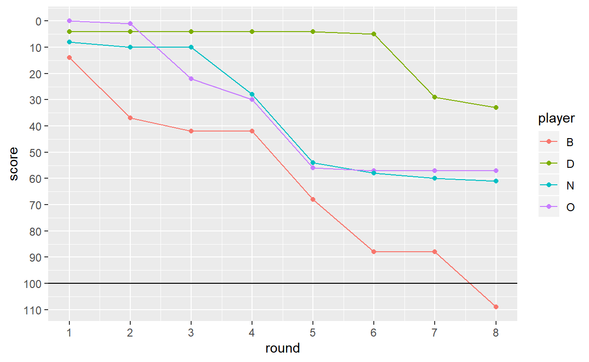
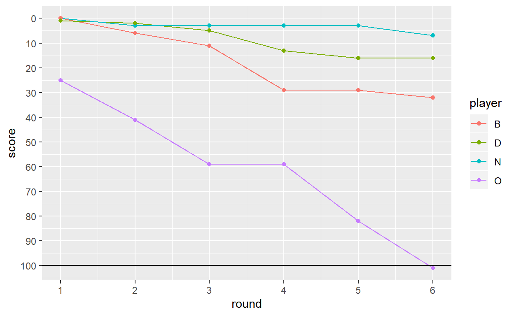

Visualising card game results. Less exciting than it sounds.
One of my goals for the year is to blog at least once a month - and time is nearly up for January! I’ve got a couple of things I’ve started on, notably my “quantified self” data, though I’m still letting the data ramble. Inspired by Maëlle Salmon’s Catan visualisation I thought I’d finish up a visualisation of Hearts that I poked at last weekend.
I’ve played a fair bit of Hearts over the years, and occasionally wondered about visualising the results. I played two games last weekend with my parents; the following morning, left at home sick whilst everyone else went to the National Aquarium, I thought I’d give it a go.
I’m not convinced they particularly add anything, but sometimes you have to try in order to find out.
Edit: the post isn’t terribly well structured, as I wrote it using features in Rmarkdown websites (eg code folding, Bootstrap tabs) that aren’t available in Radix. There are better things to do with life than rewriting old blog posts, so it is what it is.
If you don’t know Hearts, it’s fairly straightforward. Four players are dealt all the cards and play 13 hands, with the highest card in the suit led winning. Points are for certain cards won, not for the number of hands. Each heart is 1 point (hence the name) and the Queen of Spades is 13 points. The catch is that points are bad — the first to 100 points loses, and the player with the lowest score is the winner.
So there are 26 points to be distributed each round, which means the game has to take at least 4 rounds, and (I think) can’t last any more than 16 rounds. The other catch is that if one player gets all 26 points then they score 0 and the other three score 26. This is called “shooting the moon” and is harder than it sounds.1
OK, so let’s load the data. I saved the points per round, and we can calculate the scores as we go, taking into account possibly shooting the moon.
library(readr)
library(dplyr)
points1 <-
read_csv("data/hearts-g1.csv") %>%
mutate(round = row_number())
points2 <-
read_csv("data/hearts-g2.csv") %>%
mutate(round = row_number())
shoot_the_moon <-
function(df) {
df %>%
# Lazily hard-code column names
mutate(zeros = (B==0) + (O==0) + (N==0) + (D==0)) %>%
mutate(B = ifelse(zeros == 3, ifelse(B == 0, 26, 0), B),
O = ifelse(zeros == 3, ifelse(O == 0, 26, 0), O),
N = ifelse(zeros == 3, ifelse(N == 0, 26, 0), N),
D = ifelse(zeros == 3, ifelse(D == 0, 26, 0), D)) %>%
select(-zeros)
}
score1 <-
points1 %>%
shoot_the_moon() %>%
mutate_at(1:4, cumsum)
score2 <-
points2 %>%
shoot_the_moon() %>%
mutate_at(1:4, cumsum)The standard way to look at the results is just to tabulate the scores at each round. The first game took 8 rounds, and I managed to win by a comfortable margin. I shot the moon successfully in round 5, and tried again less successfully in round 7. The second game was shorter, due to one player lucking out with the queen of spades nearly every round.
score1 %>% select(-round)
# A tibble: 8 x 4
O N B D
<dbl> <dbl> <dbl> <dbl>
1 0 8 14 4
2 1 10 37 4
3 22 10 42 4
4 30 28 42 4
5 56 54 68 4
6 57 58 88 5
7 57 60 88 29
8 57 61 109 33
score2 %>% select(-round)
# A tibble: 6 x 4
O N B D
<int> <int> <int> <int>
1 25 0 0 1
2 41 3 6 2
3 59 3 11 5
4 59 3 29 13
5 82 3 29 16
6 101 7 32 16If we want to graph anything, we’re going to need tidy data.
library(tidyr)
library(magrittr)
points1 %<>% gather(player, points, -round)
points2 %<>% gather(player, points, -round)
score1 %<>% gather(player, score, -round)
score2 %<>% gather(player, score, -round)The most obvious first step to me is to graph the scores as they accumulate. Normally for this sort of thing I would use a line graph, but with the discrete jumps of the rounds I wondered if a step graph would work better. Looking at them, I’m still on the fence, so I’ve included both.
Either way, I think it makes sense to reverse the y axis, given that points are effectively negative. And having a line to indicate the end-game condition of 100 points makes it clearer.
I was tempted to highlight the player who got the Queen of Spades in each round, but since that’s half the points on offer I think it’s reasonably obvious in each case.
library(ggplot2)
library(ggthemes)
ggplot(score1, aes(x = round, y = score, group = player, color = player)) +
geom_step(size = 1) + geom_hline(yintercept = 100, color = "black") +
scale_x_continuous(breaks=1:8) + scale_y_reverse(breaks = seq(0, 110, 10))
ggplot(score1, aes(x = round, y = score, group = player, color = player)) +
geom_line() + geom_point() + geom_hline(yintercept = 100, color = "black") +
scale_x_continuous(breaks=1:8) + scale_y_reverse(breaks = seq(0, 110, 10))
ggplot(score2, aes(x = round, y = score, group = player, color = player)) +
geom_step(size = 1) + geom_hline(yintercept = 100, color = "black") +
scale_x_continuous(breaks=1:8) + scale_y_reverse(breaks = seq(0, 110, 10))
ggplot(score2, aes(x = round, y = score, group = player, color = player)) +
geom_line() + geom_point() + geom_hline(yintercept = 100, color = "black") +
scale_x_continuous(breaks=1:8) + scale_y_reverse(breaks = seq(0, 110, 10))
Hiding inside the plots of the scores are the stories of the ranking leaderboard. We can look at the positions explicitly, to more easily see when/if they swap around.
graph_by_rank <-
function(df) {
df %>%
group_by(round) %>%
mutate(rank = min_rank(score)) %>%
ungroup() %>%
ggplot(aes(x = round, y = rank, group = player, colour = player)) +
geom_line(size = 2) +
scale_x_continuous(breaks = 1:8) +
scale_y_reverse() +
theme_tufte()
}
graph_by_rank(score1)
graph_by_rank(score2)Given that there are the same number of points to be shared each round, we can plot the share of points per player. It gives you a clearer look at the results per round, and the variation between them, than the cumulative plots above. You get less of an insight into the game overall, but (at least for these two) it’s fairly clear who came last.
ggplot(points1, aes(x = round, y = points, group = player, fill = player)) +
geom_col() + theme_tufte() +
scale_x_continuous(breaks = 1:8) + scale_y_continuous(breaks = seq(0, 25, 5))
ggplot(points2, aes(x = round, y = points, group = player, fill = player)) +
geom_col() + theme_tufte() +
scale_x_continuous(breaks = 1:8) + scale_y_continuous(breaks = seq(0, 25, 5))I’ll be honest — before I started I thought these plots would be more interesting than they turned out. They’re of some interest to the participants, but I don’t think they add terribly much on top of the plain tables.
In part, I think this is because of the small number of rounds. For a more closely fought game of Hearts, or for a similar but longer card game, I think the graphs might be a bit more interesting.
I’m going to continue playing Hearts, but I think this is the last time I’ll bother trying to visualise the results.
I managed it in one of these games, but it’s the first time I’ve been successful in ages.↩
If you see mistakes or want to suggest changes, please create an issue on the source repository.
Text and figures are licensed under Creative Commons Attribution CC BY 4.0. Source code is available at https://github.com/dakvid/dakvid.github.io, unless otherwise noted. The figures that have been reused from other sources don't fall under this license and can be recognized by a note in their caption: "Figure from ...".